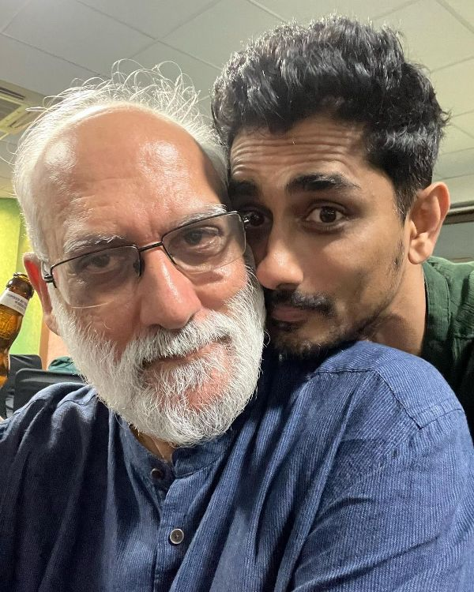
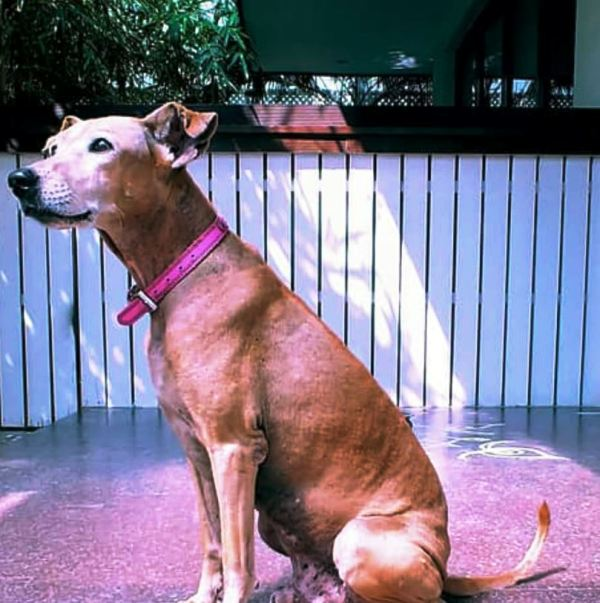
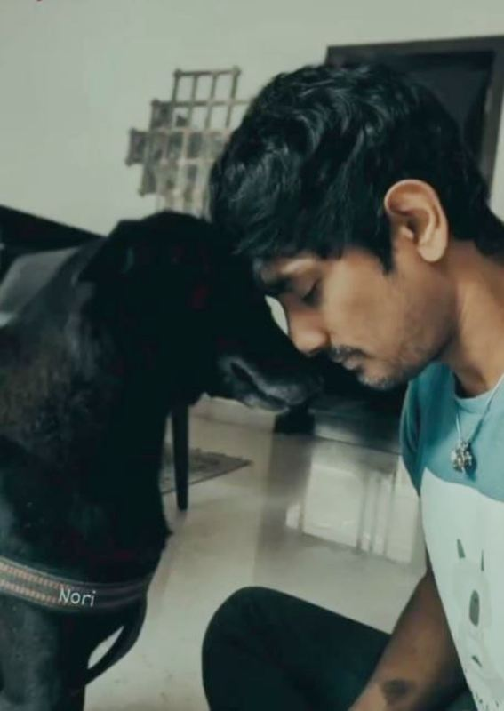
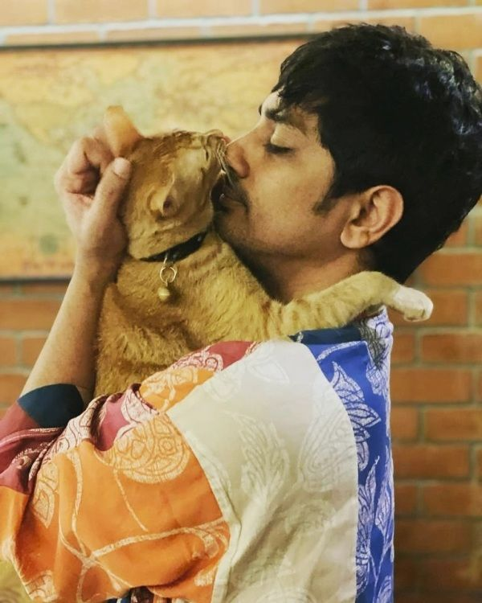

{kind=link}
Siddharth is an Indian actor, producer, playback singer, and screenwriter who primarily works in Tamil, Telugu, and Hindi films. He is known for his work in films like ‘Rang De Basanti’ (2006) (Hindi), ‘Bommarillu’ (2006) (Telugu), ‘Kaaviya Thalaivan’ (2014) (Tamil), and ‘Jabardasth’ (2013) (Telugu).
Contents
Wiki/Biography
Siddharth Suryanarayan [1]The Times of India was born on Tuesday, 17 April 1979 (age 44 years; as of 2023) in Chennai, Tamil Nadu, India. His zodiac sign is Aries. He attended DAV Boys Senior Secondary School in Chennai and Sardar Patel Vidyalaya in New Delhi. Siddharth pursued a Bachelor of Commerce (Hons.) at Kirori Mal College in Delhi.

Siddharth (right) with his college best friend Shubh in Delhi in 1996
He then earned a Master of Business Administration degree from S. P. Jain Institute of Management and Research (2001) in Mumbai. [2]Siddharth – Instagram

Siddharth, along with a friend named Meenal Raghava, at the S. P. Jain Institute of Management and Research in Mumbai
Physical Appearance
Height (approx.): 5′ 10″
Weight (approx.): 75 kg
Hair Colour: Black
Eye Colour: Black
Body Measurements (approx.): Chest: 42″, Waist: 30″, Biceps: 14″
{kind=link}
Family
Siddharth belongs to a Tamil family.
Parents & Siblings
His father’s name is Suryanarayan. He has a brother named Jayendra and a sister named Sandhya.
Wife & Children
Siddharth got married to Meghna Narayan in November 2003. The couple, however, started living separately due to some issues in 2006. Siddharth and Meghna got divorced in January 2007. The couple did not have any children.
{kind=link}
Siddharth with Meghna Narayan
Relationships/Affairs
Meghna Narayan
Siddharth dated Meghna Narayan for a long period before getting married to her in 2003. They fell in love while growing up in the same neighbourhood in New Delhi.
Soha Ali Khan
Siddharth was reported to be in a relationship with actor Soha Ali Khan in 2007. According to sources, they developed feelings for each other while working on the film ‘Rang De Basanti’ (2006). The reports about their breakup emerged in 2008.
{kind=link}
Siddharth and Soha Ali Khan
Shruti Haasan
In 2009, Siddharth started dating actor Shruti Haasan. They entered into a live-in relationship in May 2011. According to some sources, Shruti’s father, Kamal Haasan, was happy with their relationship. The couple, however, after a few months, started facing some issues. Sources suggest that Shruti’s involvement in the relationship affected her ability to focus on her work. After about five months of living together, Shruti moved out in October 2011.
{kind=link}
Siddharth and Shruti Haasan
Samantha Ruth Prabhu
Siddharth and actor Samantha Ruth Prabhu began dating in 2012. They had met each other on the sets of the Telugu film ‘Jabardasth’ in the same year after which they fell in love. Some sources claim that Samantha was even considering getting married to Siddharth. After dating for about two and a half years, the couple broke up.
{kind=link}
Siddharth and Samantha Ruth Prabhu
According to sources, some of Samantha’s friends warned her of Siddharth’s alleged reputation as a womanizer and his possible involvement with actor Deepa Sannidhi with whom he had appeared in some films. When reports about Samantha’s romantic relationship with actor Naga Chaitanya emerged on the internet, Siddharth tweeted,
Nagoor biriyani ulundur pettai la irukara naai ku dan kidaikumna adha yaarum matha mudiyadhu. (sic)(Rough translation: If a street dog in Ulundurpettai is destined to get Nagoor biryani, no one can stop it.)”
Aditi Rao Hydari
In 2021, Siddharth was rumoured to be in a relationship with actor Aditi Rao Hydari. According to sources, they started dating after they worked together on the 2021 Telugu film ‘Maha Samudram.’ On 1 January 2024, Aditi posted a picture with Siddharth on social media, which led to reports speculating that she had officially confirmed her relationship with him.
{kind=link}
Religion
Siddharth follows Hinduism. [3]Siddharth – Instagram
Career
Actor
Film
Tamil
Siddharth made his debut in the Tamil film industry with the coming-of-age musical film ‘Boys’ in 2003; he played the role of ‘Munna’ in the film. In 2004, he appeared as ‘Arjun Balakrishnan’ in the political action film ‘Aayutha Ezhuthu’ in 2004.

Siddharth as ‘Munna’ in a still from the film ‘Boys’ (2003)
He played the role of Arun in the film ‘Kadhilil Sodhappuvadhu Yeppadi’ in 2012. His work as ‘Thalaivankottai Kaliappa Bhagavathar’ in the film ‘Kaaviya Thalaivan’ (2014) was highly appreciated by the audience, and it made him win many awards later.

Siddharth as ‘Thalaivankottai Kaliappa Bhagavathar’ in the film ‘Kaaviya Thalaivan’ (2014)
In 2015, Sidhharth appeared as Vicky/Viknesh in the psychological drama film ‘Enakkul Oruvan.’ He has appeared in many other Tamil films including ‘Aranmanai 2’ (2016), ‘Aval’ (2017), ‘Aruvam’ (2019), and ‘Chithha’ (2023).
Telugu
Siddharth debuted in the Telugu film industry with a romantic comedy film, ‘Nuvvostanante Nenoddantana,’ in 2005. He appeared as ‘Santosh’ in the film.

Siddharth as ‘Santosh’ in a still from the film ‘Nuvvostanante Nenoddantana’ (2005)
In 2009, he played the role of ‘Uday’ in the film ‘Oye!’ (also spelt as Oy!). In 2013, he appeared in an action comedy film titled ‘Baadshah’ as ‘Siddhu.’ Siddharth has worked in many other Telugu films such as ‘Baava’ (2010), ‘Once Upon a Warrior’ (2011), ‘Jabardasth’ (2013), and ‘Maha Samudram’ (2021).
{kind=link}
Hindi
Siddharth made his debut in Bollywood with the drama film ‘Rang De Basanti’ in 2006. He played the role of Karan Singhania/Bhagat Singh (dual role) in the film.

Siddharth as Karan Singhania in the film ‘Rang De Basanti’ (2006)
In 2010, he appeared in the film ‘Striker’ as Suryakant Sarang. On 5 February 2010, the film became the first ever Indian film to premiere on YouTube internationally on the same day as its domestic theatrical release. Siddharth has appeared in many other Hindi-language films such as Jai in ‘Chashme Baddoor’ (2013).

Siddharth (as Jai), along with Divyenndu (as Omi) in a still from the film ‘Chashme Baddoor’ (2013)
Malayalam
Siddharth has worked in Malayalam films as well. He made his debut in the Malayalam film industry with a satirical thriller film titled ‘Kammara Sambhavam’ (2018) in which he appeared as Othenan Nambiar.

Siddharth as Othenan Nambiar in the film ‘Kammara Sambhavam’ (2018)
Web Series
He has appeared in some web series such as ‘Bhanu’ in the Hindi-language dystopian drama series ‘Leila’ (2019) which streamed on Netflix, ‘Farooq’ in the Tamil-language anthology series ‘Navarasa’ (2021) which streamed on Netflix, and ‘Krishna Rangaswamy’ in the Hindi-language series ‘Escaype Live’ (2022), which streamed on Disney+ Hotstar.
{kind=link}
Producer
Film
He debuted as a producer with the Tamil-language romantic comedy film ‘Kadhalil Sodhappuvadhu Yeppadi’ in 2012. In the same year, the film was released in the Telugu version, which was titled ‘Love Failure.’ Siddharth acted in the film as well; he played the role of ‘Arun’ in the film.

Siddharth in the film ‘Kadhalil Sodhappuvadhu Yeppadi’ (2012)
In 2016, he produced the Tamil film ‘Jil Jung Juk’ in which he appeared as Nanjil Shivaji (Jil). He has produced some other films such as the Tamil-language film ‘Aval’ (2017), which was released in Hindi as ‘The House Next Door.’
Writer
Film
Siddharth made his debut as a screenwriter with the 2006 Telugu film ‘Chukkallo Chandrudu.’ He worked as a co-writer for the film ‘Aval’ in 2017; he wrote dialogues for the film.
{kind=link}
A poster of the film ‘Chukkallo Chandrudu’ (2006)
Voice Over Artist
Film
He worked as a voice-over artist for the first time for a Banish Mosquito Repellent advertisement in 1988. He dubbed it in 8 different languages. In 2019, he voiced the character ‘Simba’ for the Tamil version of the musical drama film ‘The Lion King.’ In 2024, he voiced the character ‘Tattoo,’ an alien, for the Tamil-language film ‘Ayalaan.’
Playback Singer
Film
Telugu
Siddharth debuted as a playback singer with the songs ‘Everybody’ and ‘Edhalo Epudo’ from the film ‘Chukkallo Chandrudu’ in 2006. In the same year, he sang the song ‘Appudo Ippudo’ for the film ‘Bommarillu.’
{kind=link}
In 2009, he lent his voice to the title track of the film ‘Oye!’ (also spelt as Oy!). He has songs for many other Telugu films such as ‘Oh My Friend’ (2011), ‘NH4’ (2013), and ‘Ninu Veedani Needanu Nene’ (2019).
Tamil
Siddharth made his debut as a playback singer in the Tamil film industry with the song ‘Adada Adada’ from the romantic comedy film ‘Santosh Subramaniam’ in 2008. In 2012, he lent his voice to the songs ‘Parvathi Parvathi’ and ‘Ananda Jaladosam’ from the film ‘Kadhilil Sodhappuvadhu Yeppadi.’ He has sung many other songs for films like ‘Jil Jung Juk’ (2016).
{kind=link}
A poster of the film ‘Santosh Subramaniam’ (2008)
Hindi
He debuted as a playback singer in Bollywood with the song ‘Haq Se’ from the film ‘Striker’ (2010).
{kind=link}
Controversy
A Derogatory Tweet
Siddharth stirred controversy due to a tweet he posted in response to professional badminton player Saina Nehwal in January 2022. His tweet was a reaction to Nehwal’s comments about PM Narendra Modi’s security breach in Punjab.

Siddharth’s tweet to Saina Nehwal on PM Modi’s security breach in Punjab
Siddharth’s tweet was widely criticized for its content, which attracted significant backlash from many including Rekha Sharma, the chairman of the National Commission for Women (NCW), who called for strict action against him.

NCW Chairperson Rekha Sharma’s tweet about Siddharth in which she demanded action against him over his controversial tweet to Saina Nehwal
Siddharth, on the other hand, addressed the matter and posted an apology letter to Saina on social media on 11 January 2022. The Cyber Crime Police of Hyderabad, however, registered a case against Siddharth for his tweet on 12 January 2022; the case was filed based on a complaint from Prerna Thiruvaipati. Siddharth was charged under Section 67 of The Information Technology Act, which deals with the publication of obscene material in electronic form, and Section 509 of the Indian Penal Code, which refers to words, gestures, or acts meant to insult the modesty of a woman. [4]The Hindu
{kind=link}
Siddharth’s apology letter to Saina Nehwal
Awards
- International Tamil Film Award for Best New Actor for the Tamil-language film ‘Boys’ (2004)
- Best Actor award for the Telugu film ‘Nuvvostanante Nenoddantana’ at Filmfare Awards South (2005)
- Tamil Nadu Government Film Award for Best Actor for the Tamil-language film ‘Kaaviya Thalaivan’ (2014)
{kind=link}
- Best Actor award for the film ‘Kaaviya Thalaivan’ at the Norway Tamil Film Festival Awards (2015)
Favourites
- Bollywood Actor: Kamal Haasan
- Hollywood Actor: Donald Glover
- Director: Mani Ratnam
- Comedian(s): Laurel and Hardy
Facts/Trivia
- Siddharth is fondly called ‘Sidy,’ ‘Sidey,’ ‘Siddhu,’ and ‘Siddh’ by his friends and family members. [5]Siddharth – Instagram
- He also goes by the name R. Siddharth Narayan.
- He is well-versed in five languages, Tamil, Telugu, Hindi, Malayalam, and English. He also can understand around 10 languages.
- Siddharth has gained a significant fan base in Germany.
- During his college days, he participated in many extracurricular activities and competitions such as the World Debating Championship.
- During his time at Kirori Mal College in New Delhi, Siddharth was actively involved in theatre and performed in various plays, including “Gum & Goo” by Howard Brenton. He was a part of the college’s theatrical group, ‘Players.’ Siddharth credits his training in theatre to the guidance he received from Keval Arora, an English professor at the college.

Siddharth with professor Keval Arora
{kind=link}
- In 1999, Siddharth won a speaking competition and was awarded the CNBC Manager of the Year.
- In 2002, he worked as an assistant director for the Tamil-language film ‘Kannathil Muthamittal,’ which was directed by Mani Ratnam. During this project, he also made his first on-screen appearance in an uncredited role as a bus passenger.
- He is an avid animal lover. He once had a pet dog named Mowgli, whom he had rescued from the middle of the road in Chennai. He has a pet cat named Tatcho and another dog named Nori.

Siddharth’s first pet, Mowgli
Siddharth with his pet, Nori
Siddharth with his cat, Tatcho
{kind=link}
{kind=link}
{kind=link}
- His hobbies include reading and travelling.
- On 27 December 2022, Siddharth claimed that he and his parents were harassed by security officials at the Madurai Airport in Tamil Nadu. His parents were asked to remove coins from their bags, and the officials communicated with them in Hindi even after they requested them to speak English. While the security at Madurai Airport is handled by the Central Industrial Security Force (CISF), Siddharth made allegations against the Central Reserve Police Force (CRPF). [6]NDTV
{kind=link}
References